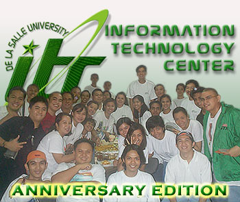

|
ITC
Day 2001 Celebration a Rousing Success!
By:
Francis Mark Santos, Joel Kisteria
The
Information
Technology Center (ITC) recently held an "open house"
where it showcased the different systems, equipment, processes
and important documents it maintain that are essential for
the University's functions. The open house coincides with
the celebration of the thirtieth foundation of the Center
which was known then as La Salle Computer Center (LSCC).
The Academic
Community, administrators, University staffers and students
alike, showed its support for the ITC by arriving in droves
to view the exhibits and to participate in the interactive
kiosks.
ITC
Day In Summary
Computer
Facilities and Operations (CFO)
We
can say that the CFO's theme was "Yesterday, Today and
Tomorrow" because of their exhibit on the different technologies
from a long time ago. Old computers, devices and gadgets including
space-consuming processors were all made available for viewing.
CFO also showcased where the PC technology is headed by displaying
high-end equipment and products that makes video conferencing
and the wireless local area networks (LAN) possible.
Computer
Laboratory Operations (CLO)
CLO
presented their Student Assistantship program through a very
colorful and enticing Powerpoint presentation. It attracted
a number of students to join the SA group and enjoy a rewarding
stay at the University.
Data
Administration Office (DAO) and Documentation Office (DOCU)
The DOCU Office showed their mastery of web design by
presenting the ITC History and the evolution of the DLSU Web
Site. The ITC History tells about the beginning of computerization
of DLSU from the foundation of LSCC up to the present ITC
that caters to the ever-growing need of IT services of the
University. Streaming videos from the TV show Digital Tour
on interviews of ITC Director Samuel Mallare and WISe guy
Johnny Benitez were running on a PC all day.
Process
Review and Improvement Office (PRIO)
PRIO
presented the quality structures and systems the ITC are having,
which are intended to be disclosed and used in the PRIT sessions
in the University. This is all in line with the concern of
the unit to inject quality awareness to all units of the University.
Systems
Management Office (SMO)
SMO
featured "Systems Trek" (see related article
below) which highlighted their PC-based systems and also
their Web-based systems. The ID Access System greeted the
viewers of the event and for some lucky "ID" holders,
surprise gifts were awarded. SMO also had a chance to run
the "Survey System" they are building.
SMO
Systems Featured in ITC Day
by: Brian
Co
ITC
celebrated its anniversary last June 22, Friday. All the ITC
office-units were involved in different ways. For its part,
SMO displayed several of its new systems.
Among
those exhibited were the Employment Information (EMI), Evaluation
(EVA), Faculty Attendance Monitoring (FAM), Helpdesk (HED),
and ID Access (IDA) systems. Web-based systems such as the
Library Portal (LPS), My La Salle (MLS), and Online Survey
(OLS) systems as well as an online module for the Admissions
(ADM) system were likewise presented.
A
big hit was the modified ID Access system. This version did
not only validate the identification cards of visitors to
the exhibit but it also displayed their picture and name as
well. Using ASP technology, a raffle feature with a 25% chance
of winning was also built into the system. Every exhibit guest
was also sent a "thank-you" email message automatically
when they flashed their IDs for scanning.
According
to statistics obtained from IDA, the ITC exhibit had approximately
280 (excluding some members of the DLSU community who were
not able to bring their IDs) visitors and roughly 60 of them
won prizes for their effort.
Lastly,
many visitors remarked on the rapid pace of technological
development happening both globally and campus-wide. They
were amazed at the remarkable things that computers and computer
systems were capable of achieving. Of course, we all realize
that these feats would not be possible without manual intervention
and ingenuity.
|